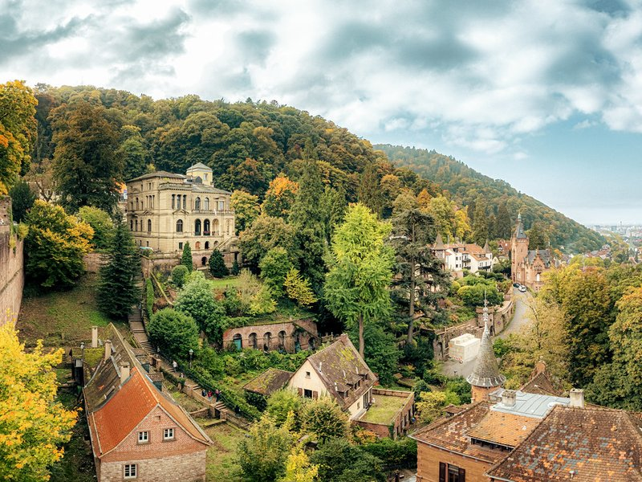
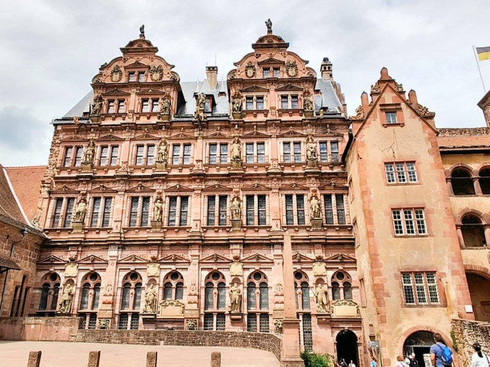
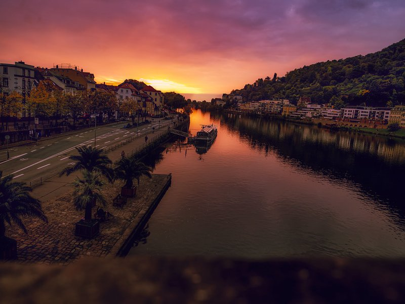
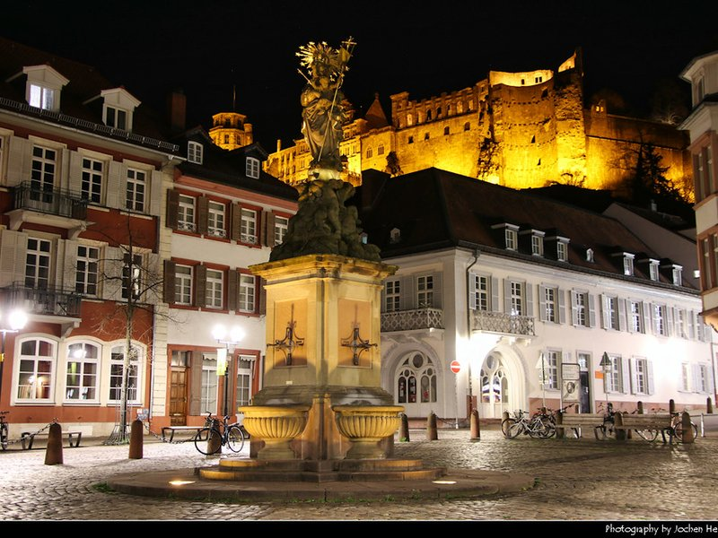
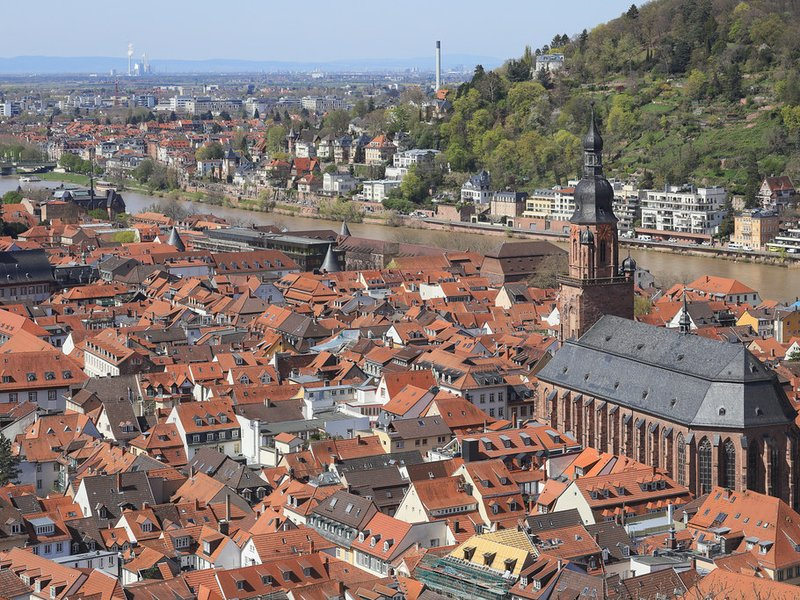
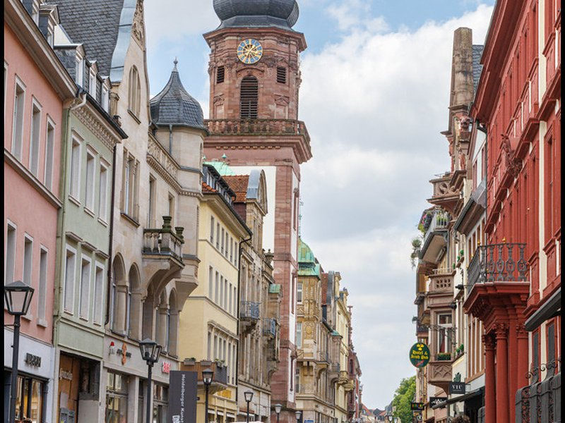
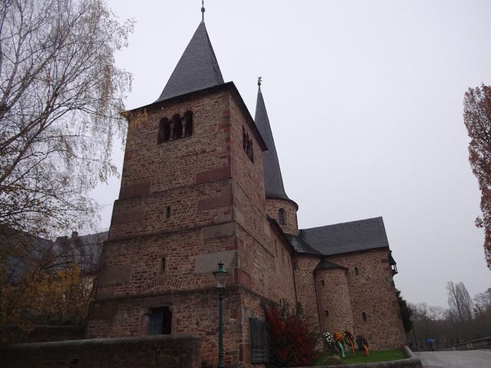
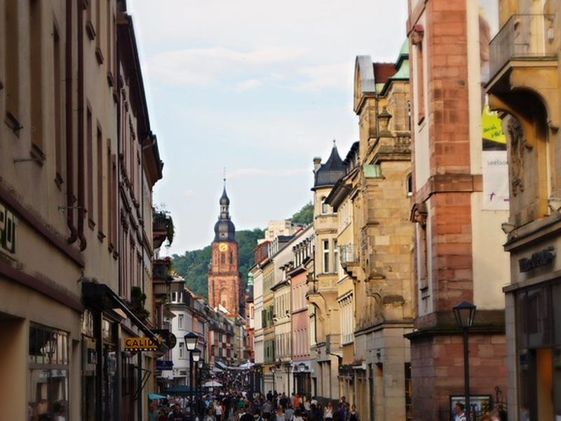
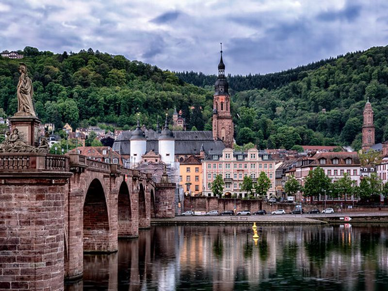

Explore Heidelberg
A Brief History
Heidelberg grew as a residence of the Palatinate electors from the 14th century, with a castle above the Neckar that became a symbol of German Romanticism after its 18th-century destruction. The university, founded in 1386, is among the oldest in Germany and shaped the old town's churches, student quarters, and bridge crossings. 19th-century artists and travelers popularized the riverside panorama. Today Heidelberg balances research, tourism, and U.S.
Attractions Map
Top Sights & Activities

Philosophenweg
The Philosophenweg follows the sunny north slope above the Neckar with paths through vineyards and gardens. Views take in the old town, Old Bridge, and castle ruins opposite. The walk belongs to the landscape that shaped Heidelberg's romantic reputation in 19th-century art and travel writing.

Schlangenweg
Schlangenweg is a steep stepped path connecting the riverside with the Philosophenweg on the north bank of the Neckar. Switchbacks climb through trees between the old town and hillside viewpoints. The route shows how Heidelberg's topography links river traffic, streets, and slopes above the water.

Old Bridge Heidelberg
The Old Bridge, or Karl-Theodor-Brücke, spans the Neckar with stone arches rebuilt after 1788 and a medieval gate tower on the town side. Crossing remained essential for trade and movement between banks. The bridge forms one of the defining riverfront views beneath the castle hill.

Schloss Heidelberg
Heidelberg Castle preserves Gothic and Renaissance structures on the Königstuhl slope, residence of the Electors Palatine until damage in the 17th century. The Great Barrel and ruined courts draw visitors to the terrace above the city. Partial destruction in the 17th century later fed the castle's romantic image abroad.

Lift Heidelberg Castle
The Heidelberg funicular links Kornmarkt in the old town with the castle terrace and continues to the Königstuhl summit. The lower section dates to 1890 and eases the steep climb for visitors. The line represents practical infrastructure that made the historic heights more accessible.

German Pharmacy Museum
The German Pharmacy Museum inside the castle courtyard displays apothecary shops, jars, and equipment from several centuries. Reconstructed interiors explain how remedies were prepared and sold. The setting links everyday medical culture with the courtly and university history of Heidelberg.

Barrel Building
The barrel building in the castle courtyard houses the Great Heidelberg Tun, a vast wine cask rebuilt several times for court festivities. The 1751 version holds about 221,000 litres and became a tourist curiosity. The space illustrates ceremonial storage and hospitality in the electoral residence.

Heiliggeistkirche
The Church of the Holy Spirit occupies the market square between the old town hall site and the Neckar, with a nave used for both Catholic and Protestant worship in different eras. Its tower dominates the main street axis. The church shows how closely civic and ecclesiastical geography met in Heidelberg.

Heidelberg University
Heidelberg University, founded in 1386, is Germany's oldest university and shaped the city's academic identity through faculties, libraries, and student life. Historic buildings include the Old University and Student Prison in the old town. Scholars and students have shared the urban landscape with residents and visitors for over six centuries.